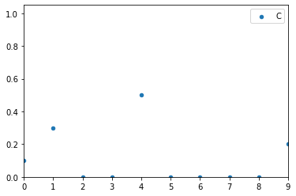
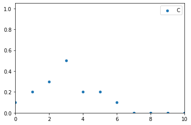
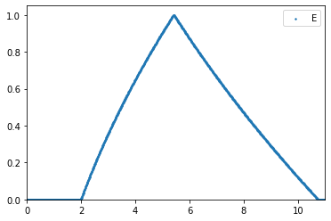
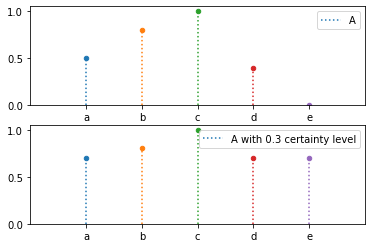
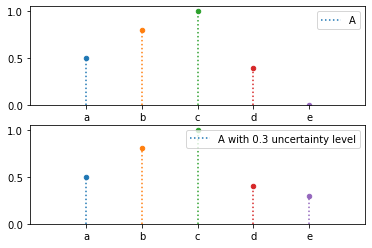
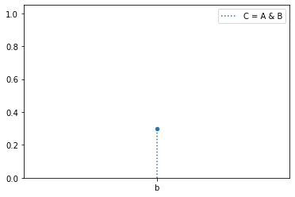
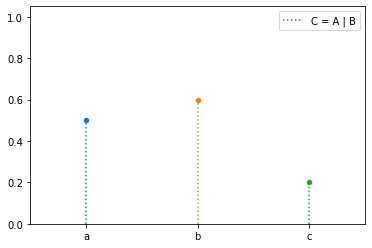
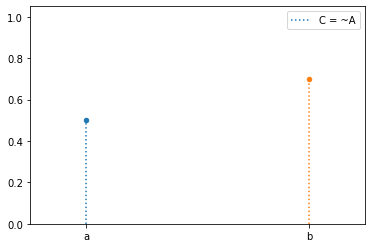
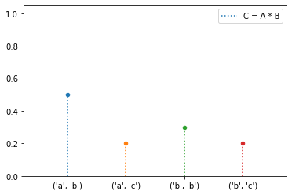

Discrete¶
- class floulib.Discrete(*args, label='')¶
Bases:
PlotThis class contains methods to perform operations on discrete fuzzy subsets.
- __init__(*args, label='')¶
Constructor
- Parameters:
*args (Tuple(str, float) | Tuple(str, float) | numpy.ndarray | str) –
If tuples are provided, the first element is the item of the universe of discourse, the second element is the grade of membership.
If only one argument is provided and its type is numpy.ndarray, a discrete fuzzy subset is generated. Its universe of discourse is the argument and the grades of membership are equal to 0.
If there are several arguments which are not tuples a discrete subset is generated. Its universe of discourse is the argument and the grades of membership are equal to 0.
label (str, optional) – The label associated with the discrete fuzzy subset. The default is ‘’.
- Raises:
TypeError – Raised is one argument is provided and is not an instance of numpy.ndarray.
- Return type:
None.
Example
Parameters are tuple on linguistic universe of discourse
>>> from floulib import Discrete >>> import numpy as np >>> A = Discrete(('a', 0.5), ('b', 0.3), label = 'A') >>> print(A) 0.500/a + 0.300/b
Parameters are tuple on numeric universe of discourse
>>> B = Discrete((1.0, 0.8), (2, 0.4), label = 'B') >>> print(B) 0.800/1 + 0.400/2
Parameter type is numpy.ndarray
>>> x = np.arange(0, 6, 1) >>> C = Discrete(x, label = 'C') >>> print(C) 0.000/0 + 0.000/1 + 0.000/2 + 0.000/3 + 0.000/4 + 0.000/5
Parameter types are str
>>> D = Discrete('x', 'y', 'z', label = 'D') >>> print(D) 0.000/x + 0.000/y + 0.000/z
- composition(x, relation)¶
Computes the image of the input x by a relation.
- Parameters:
x (Discrete) – The inout discrete fuzzy set.
relation (function) – The relation must have two parameters. The first one is a tuple which contains the components of the universe of discourse of the inputs. The second one is the output element.
- Raises:
TypeError – Raised if x is not an instance of
Discrete.- Returns:
The result.
- Return type:
Example
>>> from floulib import Discrete >>> import numpy as np >>> A = Discrete((0, 0.1), (1, 0.3), (2, 0.5), (3, 0.2)) >>> x = np.arange(0, 10, 1) >>> # Computes the image of A by the function y=x^2 >>> C = Discrete(x).composition(A, relation = lambda x,y: 1 if y == x[0]**2 else 0) >>> C.label('C') >>> C.plot(s = 20) >>> print(C) 0.100/0 + 0.300/1 + 0.000/2 + 0.000/3 + 0.500/4 + 0.000/5 + 0.000/6 + 0.000/7 + 0.000/8 + 0.200/9
- cut(alpha)¶
Computes the alpha-cut of a discrete fuzzy subset.
- Parameters:
alpha (float) – The level of the cut.
- Returns:
The alpha cut.
- Return type:
numpy.ndarray
Example
>>> from floulib import Discrete >>> A = Discrete(('a', 0.5), ('b', 0.8), ('c', 1.0), ('d', 0.4), ('e', 0)) >>> print(A.cut(0.5)) ['a' 'b' 'c']
- cut_strict(alpha)¶
Computes the strict alpha-cut of a discrete fuzzy subset.
- Parameters:
alpha (float) – The level of the cut.
- Returns:
The strict alpha cut.
- Return type:
numpy.ndarray
Example
>>> from floulib import Discrete >>> A = Discrete(('a', 0.5), ('b', 0.8), ('c', 1.0), ('d', 0.4), ('e', 0)) >>> print(A.cut_strict(0.5)) ['b' 'c']
- extension(x, func, precision=0.01)¶
Computes Zadeh’s extension principle.
- Parameters:
x (Discrete) – The input discrete fuzzy set.
func (function) – The function must have two parameters. The first one is a tuple which contains the components of the universe of discourse of the inputs. The second one is the output element.
precision (float, optional) – The precision for accepting, for a given y, x as f-1(y). Default is 0.01.
- Raises:
TypeError – Raised if x is not an instance of
Discrete.- Returns:
The result.
- Return type:
Example
>>> from floulib import Discrete >>> import numpy as np >>> A = Discrete((0, 0.1), (1, 0.3), (2, 0.5), (3, 0.2)) >>> B = Discrete((0, 0.2), (1, 0.5), (2, 0.2), (3, 0.1)) >>> x = np.arange(0, 11, 1) >>> # Computes the sum of A by B >>> C = Discrete(x).extension(A*B, func = lambda x,y: x[0]+x[1]) >>> C.label('C') >>> C.plot(s = 20) >>> print(C) 0.100/0 + 0.200/1 + 0.300/2 + 0.500/3 + 0.200/4 + 0.200/5 + 0.100/6 + 0.000/7 + 0.000/8 + 0.000/9 + 0.000/10
Case where the approximation is used. The choices of the steps and the precision are quite sensitive to obtain a valuable result.
>>> from floulib import Discrete, LR >>> import math >>> import numpy as np >>> D = LR(2,1, 1) >>> x = np.arange(0, 4, 0.001) >>> y = np.arange(0, 11, 0.01) >>> E = Discrete(y).extension(D(x), func = lambda x,y: x*x + math.sqrt(x)) >>> E.label('E').plot()
- kernel()¶
Computes the kernel a discrete fuzzy subset.
- Returns:
The kernel.
- Return type:
numpy.ndarray
Example
>>> from floulib import Discrete >>> A = Discrete(('a', 0.5), ('b', 0.8), ('c', 1.0), ('d', 0.4), ('e', 0)) >>> print(A.kernel()) ['c']
- membership(x)¶
Computes the grade of membership of an item x of the universe of discourse.
- Parameters:
x (float | str) – Item of the universe of discourse.
- Raises:
Exception – Raised if x does not belong to the universe of discourse.
- Returns:
Grade of membership.
- Return type:
float
Example
>>> from floulib import Discrete >>> A = Discrete(('a', 0.5), ('b', 0.3)) >>> print(A.membership('b')) O.3 >>> B = Discrete((1, 0.8), (2, 0.4)) >>> print(B.membership(2)) 0.4
- support()¶
Computes the support of a discrete fuzzy subset.
- Returns:
The support.
- Return type:
numpy.ndarray
Example
>>> from floulib import Discrete >>> A = Discrete(('a', 0.5), ('b', 0.8), ('c', 1.0), ('d', 0.4), ('e', 0)) >>> print(A.support()) ['a' 'b' 'c' 'd']
- Certainty(level)¶
Adds a certainty level to the duscrete fuzzy subset.
This method is generally used with variables in rules. For this reason, it starts with the capital letter C.
- Parameters:
value (float) – The certainty level.
- Returns:
The discrete fuzzy subset with certainty level.
- Return type:
Example
>>> from floulib import Discrete >>> A = Discrete(('a', 0.5), ('b', 0.8), ('c', 1.0), ('d', 0.4), ('e', 0)) >>> A.label('A') >>> B = A.Certainty(0.3).label('A with 0.3 certainty level') >>> A.plot(nrows = 2).add_plot(B, index = 1) >>> print(B) 0.700/a + 0.800/b + 1.000/c + 0.700/d + 0.700/e
- Uncertainty(level)¶
Adds an uncertainty level to the discrete fuzzy subset.
This method is generally used with variables in rules. For this reason, it starts with the capital letter U.
- Parameters:
level (float) – The uncertainty level.
- Returns:
The discrete fuzzy subset with uncertainty level.
- Return type:
Example
>>> from floulib import Discrete >>> A = Discrete(('a', 0.5), ('b', 0.8), ('c', 1.0), ('d', 0.4), ('e', 0)) >>> A.label('A') >>> B = A.Uncertainty(0.3).label('A with 0.3 uncertainty level') >>> A.plot(nrows = 2).add_plot(B, index = 1) >>> print(B) 0.500/a + 0.800/b + 1.000/c + 0.400/d + 0.300/e
- __and__(other)¶
Special method for using the opertor & as the intersection of two discrete fuzzy subsets.
- Parameters:
other (Discrete) – The RHS discrete fuzzy subset.
- Raises:
TypeError – Raised if the RHS operand is not an instance of
Discrete.- Returns:
The intersection.
- Return type:
Example
>>> from floulib import Discrete >>> A = Discrete(('a', 0.5), ('b', 0.3), label = 'A') >>> B = Discrete(('b', 0.6), ('c', 0.2), label = 'B') >>> C = (A & B).label('C = A & B') >>> print(f'A = {A}') >>> print(f'B = {B}') >>> print(f'C = A & B = {C}') >>> C.plot() A = 0.500/a + 0.300/b B = 0.600/b + 0.200/c C = A & B = 0.300/b
- __or__(other)¶
Special method for using the opertor | as the union of two discrete fuzzy subsets.
- Parameters:
other (Discrete) – The RHS discrete fuzzy subset.
- Raises:
TypeError – Raised if the RHS operand is not an instance of
Discrete.- Returns:
The union.
- Return type:
Example
>>> from floulib import Discrete >>> A = Discrete(('a', 0.5), ('b', 0.3), label = 'A') >>> B = Discrete(('b', 0.6), ('c', 0.2), label = 'B') >>> C = (A | B).label('C = A | B') >>> print(f'A = {A}') >>> print(f'B = {B}') >>> print(f'C = A | B = {C}') >>> C.plot() A = 0.500/a + 0.300/b B = 0.600/b + 0.200/c C = A | B = 0.500/a + 0.600/b + 0.200/c
- __invert__()¶
Special method for using the unary opertor ~ as the complement of a discrete fuzzy subset.
- Returns:
The complement.
- Return type:
Example
>>> from floulib import Discrete >>> A = Discrete(('a', 0.5), ('b', 0.3), label = 'A') >>> C = (~A).label('C = ~A') >>> print(f'A = {A}') >>> print(f'C = ~A = {C}') >>> C.plot() A = 0.500/a + 0.300/b C = ~A = 0.500/a + 0.700/b
- __mul__(other)¶
Special method to compute the cartesian product of two discrete fuzzy subsets.
- Parameters:
other (Discrete) – The other discrete fuzzy subset.
- Raises:
TypeError – Raised if the RHS operand is not an instance of
Discrete.- Returns:
The cartesian product.
- Return type:
Example
>>> from floulib import Discrete >>> A = Discrete(('a', 0.5), ('b', 0.3), label = 'A') >>> B = Discrete(('b', 0.6), ('c', 0.2), label = 'B') >>> C = (A * B).label('C = A * B') >>> print(f'A = {A}') >>> print(f'B = {B}') >>> print(f'C = A * B = {C}') >>> C.plot() A = 0.500/a + 0.300/b B = 0.600/b + 0.200/c C = A * B = 0.500/('a', 'b') + 0.200/('a', 'c') + 0.300/('b', 'b') + 0.200/('b', 'c')
- __str__(_format=3)¶
Special method for printable string representation.
- Parameters:
_format (int, optional) – Number of decimal digits. The default is 3.
- Returns:
result – Printable string.
- Return type:
str
Example
>>> from floulib import Discrete >>> A = Discrete(('a', 0.5), ('b', 0.3)) >>> print(f'A = {A}') A = 0.500/a + 0.300/b